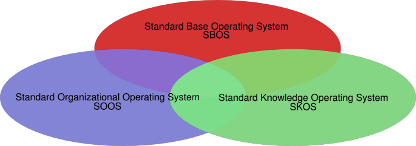

previous
|
start
|
next
Introducing into the Open Systems Software Architecture

All made with libre software.
Nothing to do with the 80's-90's open system concept
Formulated by Francisco de Urquijo (from Mexico)
previous
|
start
|
next